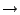

Next: Stopwatch (stopwatch) Up: Signal Processing Blocks Previous: The Real-Imag to Complex Contents
| Parameter | Variable | Description |
|---|---|---|
| Number of inputs | n_inputs | The number of parallel inputs (and outputs). |
| Port | Dir. | Data Type | Description |
|---|---|---|---|
| sync | in | Boolean | Indicates the next clock cycle contains valid data |
| In | in | Inherited | The stream(s) to be transposed. |
| sync_out | out | Boolean | Indicates that data out will be valid next clock cycle. |
| Out | out | Inherited | The transposed stream(s). |
| In1 | d12 | d8 | d4 | d0 |  | d3 | d2 | d1 | d0 | Out1 |
| In2 | d13 | d9 | d5 | d1 | d7 | d6 | d5 | d4 | Out2 | |
| In3 | d14 | d10 | d6 | d2 | d11 | d10 | d9 | d8 | Out3 | |
| In4 | d15 | d11 | d7 | d3 | d15 | d14 | d13 | d12 | Out4 |